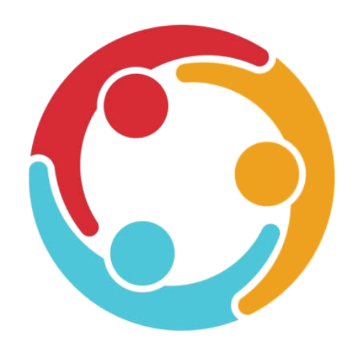

Program za zmernej코o uporabo dru쬬bnih omre쬴j z omejitvijo prikazanih objav.Trenutno je podprta le uporaba YouTube-a.
Namen
캛e se tudi vam kdaj zgodi, da 캜as ob dru쬬bnih omre쬵ih kar izpuhti, 캜eprav bi bolj potrebovali spanca ali pa prave dru쬭e, je ta aplikacija morda del re코itve, da ne bo ve캜 prihajalo do tovrstnih situacij:

Uporaba
Na Google Cloud Console si pridobi API klju캜 in ga vnesi v nastavitvah aplikacije. Nato si omogo캜i YouTube Data API v3. Z uporabo iskalnika ID-jev pridobi ID-je kanalov, ki jih 쬰li코 spremljati in jih dodaj v nastavitvah.
API klju캜 in ID-ji kanalov se shranijo lokalno v brskalniku.
Kanal lahko naknadno tudi skrije코 iz prikaza ali pa ga odstrani코.
Med objavami bo코 tako videl zadnje tri objave izbranih kanalov razvr코캜ene po datumu objave.
Priporo캜ila
API klju캜a ne delimo z drugimi osebami (oziroma to po캜nemo v omejenem obsegu), saj je Google API le do neke to캜ke brezpla캜en.
Za bolj코o izku코njo digitalnega minimalizma se izogibajte sledenju velikemu 코tevilu kanalov in dejansko aplikacijo na namizju/v zaznamkih raje nadomestite s to aplikacijo, da boste s tem zares zmanj코ali svojo uporabo dru쬬bnih omre쬴j.
V branje vam priporo캜am tudi branje knjige Digitalni minimalizem, ki je iz코la pri zavodu Iskreni.
 Vreme
Vreme
 SociaLite
游 Pripomo캜ekProgram za zmernej코o uporabo dru쬬bnih omre쬴j z omejitvijo prikazanih objav.Trenutno je podprta le uporaba YouTube-a.
Namen
캛e se tudi vam kdaj zgodi, da 캜as ob dru쬬bnih omre쬵ih kar izpuhti, 캜eprav bi bolj potrebovali spanca ali pa prave dru쬭e, je ta aplikacija morda del re코itve, da ne bo ve캜 prihajalo do tovrstnih situacij:
Uporaba
Na Google Cloud Console si pridobi API klju캜 in ga vnesi v nastavitvah aplikacije. Nato si omogo캜i YouTube Data API v3. Z uporabo iskalnika ID-jev pridobi ID-je kanalov, ki jih 쬰li코 spremljati in jih dodaj v nastavitvah.
API klju캜 in ID-ji kanalov se shranijo lokalno v brskalniku.
Kanal lahko naknadno tudi skrije코 iz prikaza ali pa ga odstrani코.
Med objavami bo코 tako videl zadnje tri objave izbranih kanalov razvr코캜ene po datumu objave.
Priporo캜ila
API klju캜a ne delimo z drugimi osebami (oziroma to po캜nemo v omejenem obsegu), saj je Google API le do neke to캜ke brezpla캜en.
Za bolj코o izku코njo digitalnega minimalizma se izogibajte sledenju velikemu 코tevilu kanalov in dejansko aplikacijo na namizju/v zaznamkih raje nadomestite s to aplikacijo, da boste s tem zares zmanj코ali svojo uporabo dru쬬bnih omre쬴j.
V branje vam priporo캜am tudi branje knjige Digitalni minimalizem, ki je iz코la pri zavodu Iskreni.